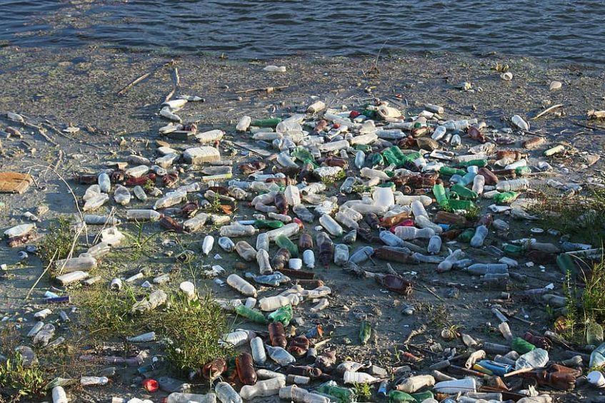
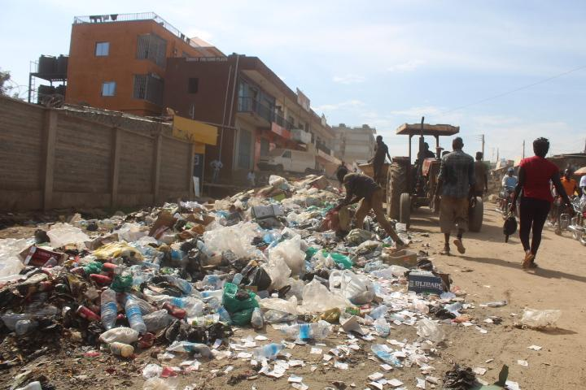
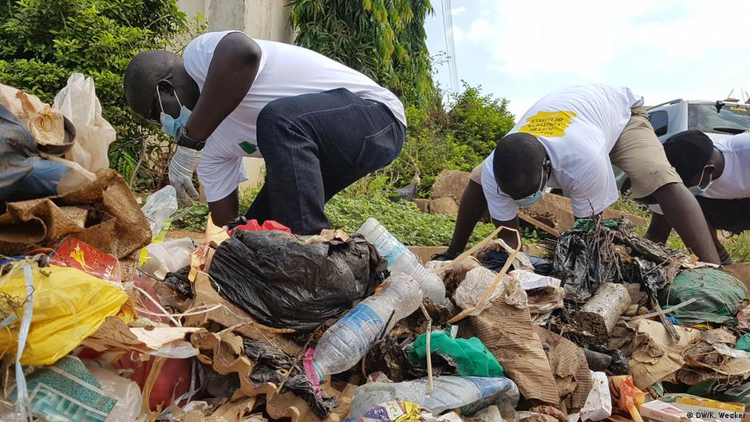
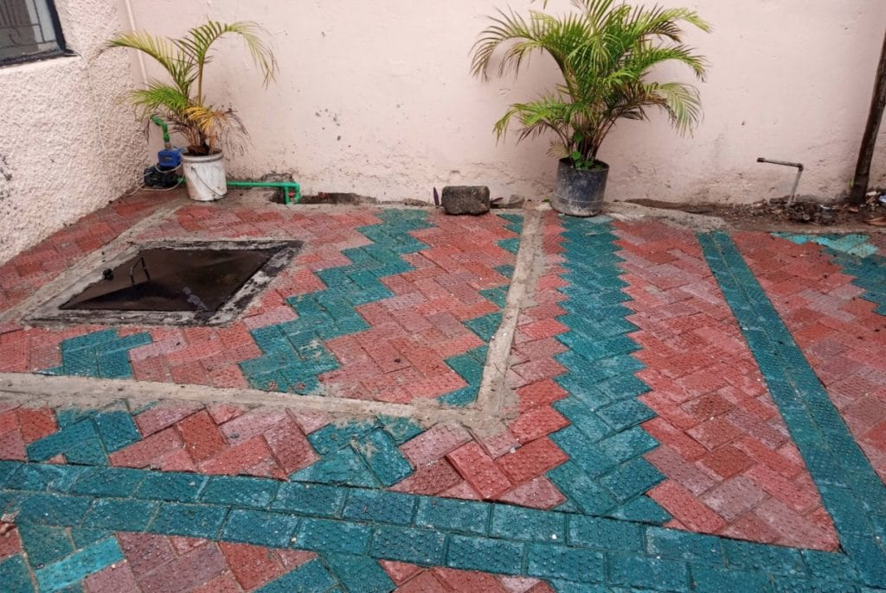
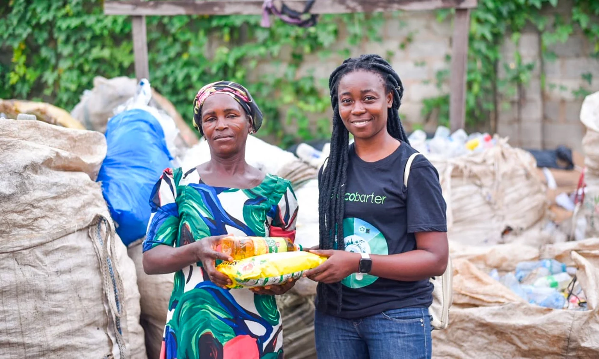

Transforming Juba's plastic pollution crisis into paving bricks, construction materials,
and furniture — while creating dignified employment for youth, women, and waste pickers.
South Sudan · Plastic Waste-to-Value Initiative
💰
Phase 1 Funding Requirement: $150,000 USD

1 TRILLION plastic bottles
The Problem
Juba's Plastic Crisis at a Glance
The Nile River — primary water source for millions — is drowning in plastic. Cholera, malaria, flooding. And South Sudan's only recycling plant shut down in 2016 and was never replaced.
💧
0
% of Juba residents rely on untreated Nile River water — consuming microplastics daily
🍶
1T+
Plastic bottles estimated to litter rivers, streets, and farmland across South Sudan
🏘️
0
% of Juba's residential areas excluded from formal waste collection services
♻️
0
Functioning recycling plants in all of South Sudan — the only one shut down in 2016
🌡️
40°C+
Juba's desert temperatures accelerate plastic degradation and microplastic contamination
⚖️
Dec '25
Governor criminalized public littering — a sign of government desperation to act

No recycling since 2016
The Solution
From Waste to Value
Modelled on Gjenge Makers Ltd (Nairobi) — which recycled 200,000+ kg of plastic and created 600 jobs — NILE FORGE adapts this proven model for Juba. No chemicals required. Solar-assisted energy. Community-driven collection.
🧴
Plastic Collected
PET bottles, HDPE containers from 5 community hubs
→
🔄
Sorted & Cleaned
By trained Nile Rangers youth collectors
→
⚙️
Shredded & Pressed
Industrial shredder + solar-powered heat press
→
🧱
Products Made
Paving bricks, construction bricks, furniture
→
💵
Revenue Earned
Sold to NGOs, UN agencies, government, private sector

Community-driven collection
Product Line
What We Build from Plastic
🧱
Paving Bricks & Tiles
Up to 140 N/mm² — 2× stronger than concrete
Footpaths, compounds, public plazas. A durable alternative for South Sudan's public infrastructure.
~$15–25 per m² · 20–30% cheaper than imported pavers
🏗️
Construction Bricks
Compressed & weather-resistant
NGO shelter projects and low-cost housing. Reduces dependency on costly imported materials.
~$0.30–0.60 per brick
🪑
Outdoor Furniture
UV-resistant · heat-tolerant at 40°C+
Schools, health centers, public parks. Low maintenance and built for Juba's extreme climate.
~$40–80 per bench

Stronger. Cheaper. Local.
Theory of Change
The Self-Reinforcing Flywheel
Each bottle collected feeds the cycle.
More collection → more production → more revenue → more jobs → more community buy-in → cleaner Nile.
NILE FORGE
🧴
Bottles Collected
⚙️
Sorted & Processed
🧱
Products Made
💵
Revenue Earned
👷
Jobs Created
🌊
Nile Gets Cleaner

Dignified jobs for youth & women
Who We Serve
Phase 1 Beneficiaries
🧑🔧
Unemployed Youth
40
Young people aged 18–35 in direct employment as production workers and supervisors
👩🏭
Women
20
Minimum 50% of the production workforce reserved for women, with priority in management training
🗺️
Nile Rangers
30
Informal waste pickers formalized into the buyback scheme — replacing dangerous scavenging
🏘️
Neighborhoods
5
Gudele, Hai Thoura, Gumbo, Munuki, and Konyokonyo — served through community hubs
🏫
Partner Schools
3
Schools exchange student-collected bottles for recycled furniture and environmental education
Implementation
6-Month Roadmap
1
Month 1
Setup & Stakeholder Engagement
Register operations in South Sudan, engage city council, baseline waste audit
2
Month 2
Equipment & Infrastructure
Install shredder, heat-press, solar unit; train 30 Nile Rangers; 5 collection hubs open
3
Month 3
Workforce Training
40 staff recruited (50% women); HSE training; first school plastic exchange
4
Month 4
Pilot Production
First 500 bricks produced; buyback payments launched; product samples to clients
5
Month 5
Market Entry & First Sales
First revenue earned; media launch event at the Nile; progress report submitted
6
Month 6
Review & Phase 2 Planning
End-of-phase audit; impact measurement; Phase 2 proposal developed
Financials
Phase 1 Budget Overview
Full cost recovery projected within 18–24 months. A 200 kg/day production unit can generate $3,000–$8,000/month in product sales.
Machinery & Equipment Shredder, press, moulds, solar unit
$45K
Staff Salaries & Wages 40 workers · 6 months
$30K
Site Setup & Leasehold
$12K
Community Buyback Fund
$13K
Collection Infrastructure 5 hubs, bins, signage
$10K
Community Awareness & Comms
$9K
Training & Capacity Building
$8K
M&E + Legal/Admin + Contingency
$23K
Total Phase 1 Requirement
Full cost recovery projected within 18–24 months
$150K
Expected Results
Phase 1 Impact Targets
25,000 kg
Plastic diverted from the Nile and landfills in 6 months
40
Full-time youth and women workers employed
30
Nile Rangers — waste pickers integrated into the formal economy
$48K
Estimated revenue earned across the 6-month phase
5
Juba neighborhoods with reduced plastic waste burden
50K+
People reached through national & regional media coverage
Call to Action
Join the Founding Partners
"The Nile does not belong to any one country — and neither does the responsibility to protect it."